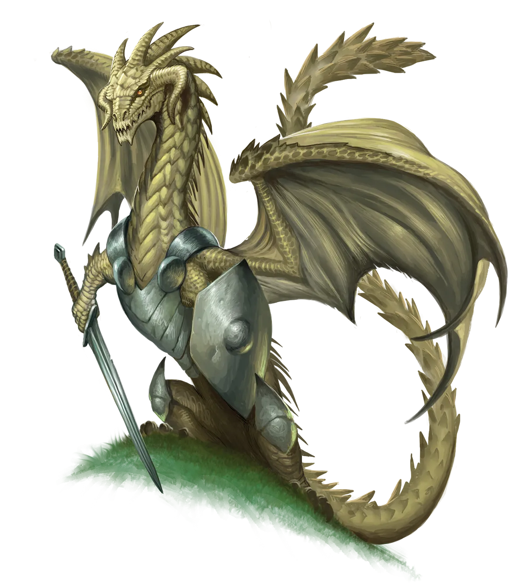
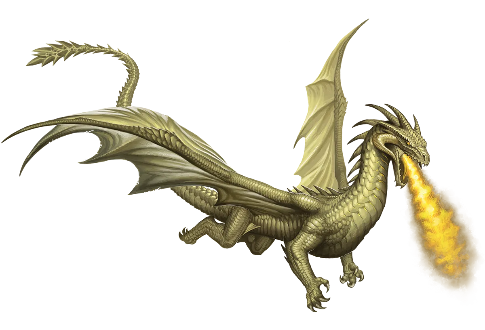

黄铜机变
黄铜龙或许在人生观上无忧无虑，但这并不意味着他们在交谈中粗心大意。他们有一种特质，能在对话中让人感到自在，即使是平日里害羞的人，或者可能因与龙交谈而退缩的人。这种理解他人并以机智方式接近他们的能力，源自于他们对选择自由的执着信念。如果他们不能理解他人，就无法确保他们尊重的是他人内心真正的愿望，而非表面上的话语。
黄铜龙 Brass Dragon |
|
|
黄铜龙是喜欢玩闹的健谈者，他们热爱体验和理解短命种族的文化与习俗。这有时会促使他们执行“永恒之光仪式”，作为亲身经历这些事物计划的一部分，加入一支冒险队伍，要么伪装身份，要么以真身示人。由于他们极端自由的主义态度，相信任何生物只要不伤害他人，就应有权做出自己的决定，传统派的黄铜龙对永恒派黄铜龙并无太大意见，反之亦然。无忧无虑、情感丰富、好奇心几乎如同孩童一般，黄铜龙对永恒之光仪式的适应能力极佳，他们短暂的注意力与仪式所鼓励的（以龙的标准而言）相对飞快的节奏完美契合，以便锻炼和增长他们的魔法。黄铜龙随着年老往往会变得消沉，虽然许多人通过照料宠物或朋友来分散注意力，但有些龙转向永恒之光仪式来让自己重新焕发活力，让生活再次激动人心。然而，这是一项危险的提案；对年长、更强大的龙类来说，初始的力量损失是巨大的，因为这使他们与年轻龙类处于同一水平，而最终的回报，无论是力量层面还是其他层面，甚至可能得不偿失。尽管如此，对这些意志消沉的年迈黄铜龙来说，力量不是重点；能够在面对致命挑战以增长魔法的过程中重新感受年轻的快节奏刺激，本身就是一种奖赏。 黄铜龙喜欢构建情报网络，利用他们许多冗长的对话获取有针对性的情报并建立联系。永恒黄铜龙更进了一步，总是为他们的冒险队伍寻找新的任务和机会。黄铜龙对选择自由的强烈热爱意味着他们总是把选择哪条道路的决定权留给整个团队。然而，黄铜龙在决策过程中仍然拥有极大的权力，因为他们没有特别的义务报告他们听到的每一条线索。这意味着如果某项任务对黄铜龙的情感来说是特别卑劣或令其厌恶的，龙可以简单地在向团队呈现时将其从选项列表中剔除。从而，假设团队完全依靠龙的情报网络来决定下一步行动，龙便对团队活动拥有最终的否决权。黄铜龙喜欢在冒险团队的各个方面都采用民主程序，并且对由单个领袖单方面做出决策的团队感到不满。然而，他们也认识到，如果团队的其他成员更倾向于单一决策声音以简化流程，并投票选出一位领袖，这同样是他们的选择――只要领袖滥用特权时，他们可以随时推翻这一决定。黄铜龙冒险者往往是魅力型的职业和能够积极参与任何对话的直面型角色。 黄铜机变 黄铜龙或许在人生观上无忧无虑，但这并不意味着他们在交谈中粗心大意。他们有一种特质，能在对话中让人感到自在，即使是平日里害羞的人，或者可能因与龙交谈而退缩的人。这种理解他人并以机智方式接近他们的能力，源自于他们对选择自由的执着信念。如果他们不能理解他人，就无法确保他们尊重的是他人内心真正的愿望，而非表面上的话语。 黄铜龙特质 Brass Dragon Traits 你出身于一脉好奇心旺盛、健谈却难以长时间集中注意力的黄铜龙世系。 |
  |